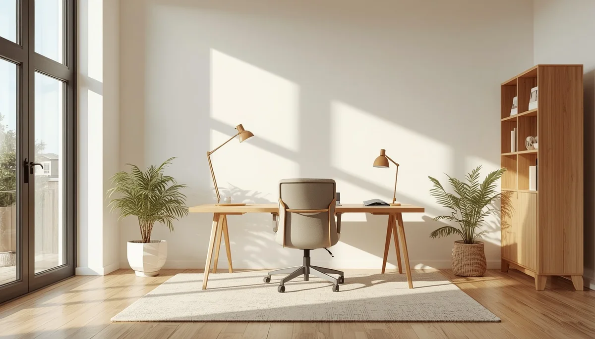
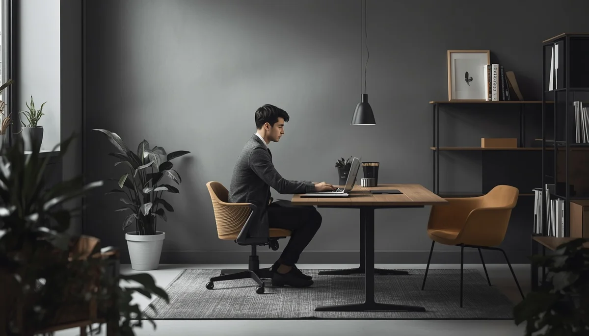
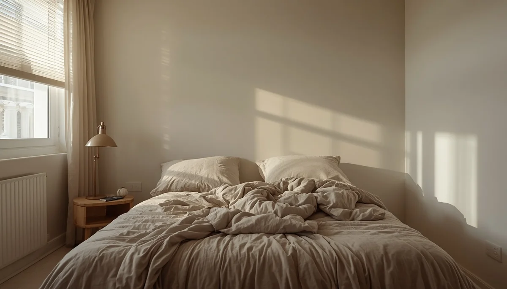
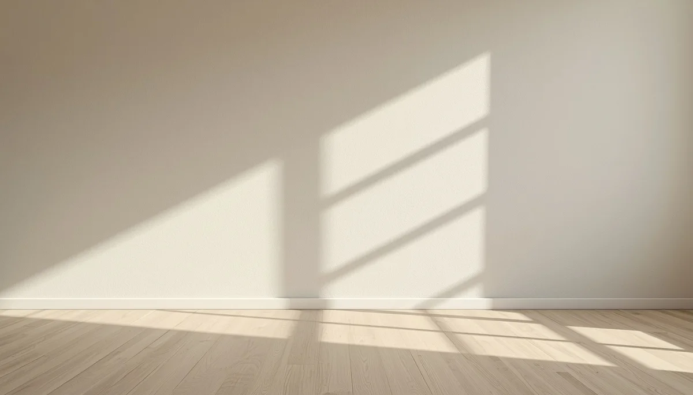

Higiene postural: Prevención de problemas de espalda
El cuidado de la columna vertebral y la adopción de hábitos posturales correctos se construyen desde los primeros años de crecimiento. Fomentar una buena alineación corporal, cuidar el peso de las mochilas y respetar los momentos de movimiento libre ayuda a prevenir molestias y asegura un desarrollo musculoesquelético armónico en la infancia. Pincha en cada tarjeta para profundizar en cada tema.

Comprender la alineación natural de la espalda
Aprende cómo evoluciona la columna vertebral durante el crecimiento y qué factores influyen en una postura corporal equilibrada.

Anatomía en movimiento y tono muscular
Cómo se relacionan la fuerza, la flexibilidad y el tono postural en la etapa infantil para sustentar el esqueleto sin tensiones.

Ergonomía al sentarse y mobiliario adaptado
Pautas sencillas para adecuar la altura de sillas, mesas y espacios de estudio protegiendo la zona lumbar y cervical.

El peso de las mochilas y el material escolar
Cómo calcular la carga adecuada, repartir el peso de forma simétrica y evitar sobrecargas lesivas en los trayectos diarios.

Movimiento libre, descanso y soportes de sueño
La importancia de un buen colchón, la postura al dormir y la alternancia entre descanso y actividad física espontánea.

Combatir el sedentarismo y las malas posturas
Estrategias prácticas para reducir el tiempo excesivo frente a pantallas y fomentar la actividad física compensatoria.
Higiene postural activa en el aula
Cómo colaborar con los centros educativos para integrar pausas activas, estiramientos y buenas posturas durante las clases.

Cuándo consultar con especialistas en fisioterapia
Señales de alerta ante molestias recurrentes, asimetrías visibles o la necesidad de una valoración ortopédica profesional.
🌱 Continúa profundizando en la salud y el bienestar infantil
Para acompañar la crianza y los hábitos de bienestar de forma completa, te sugerimos explorar estos recursos:
- 🎙️ Escucha el podcast: Límites con amor y regulación emocional (Ep. 07)
- 📥 Descarga el recurso práctico: Ritual de Sueño Tranquilo (PDF)